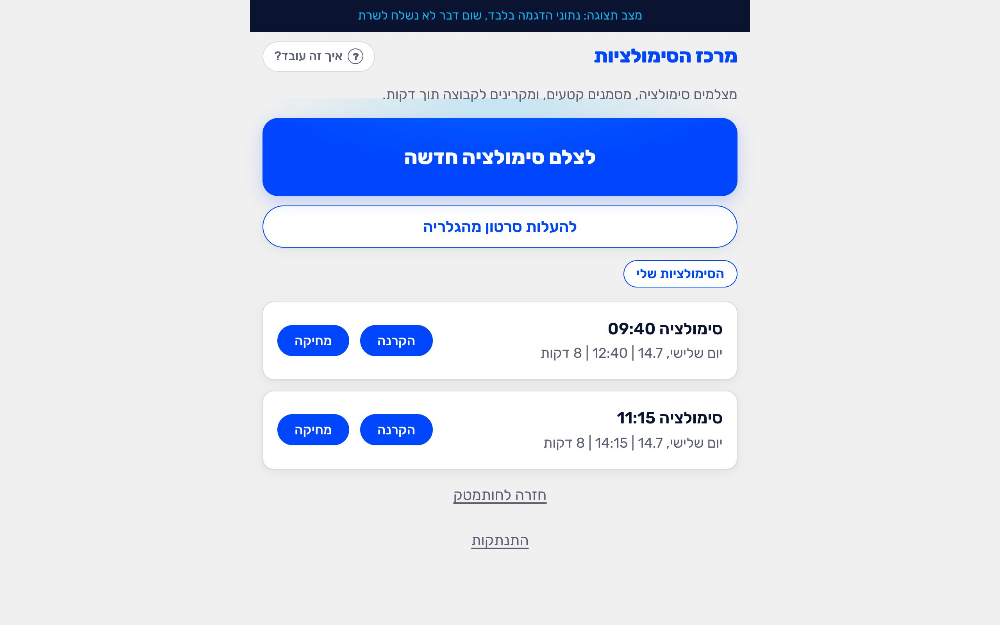
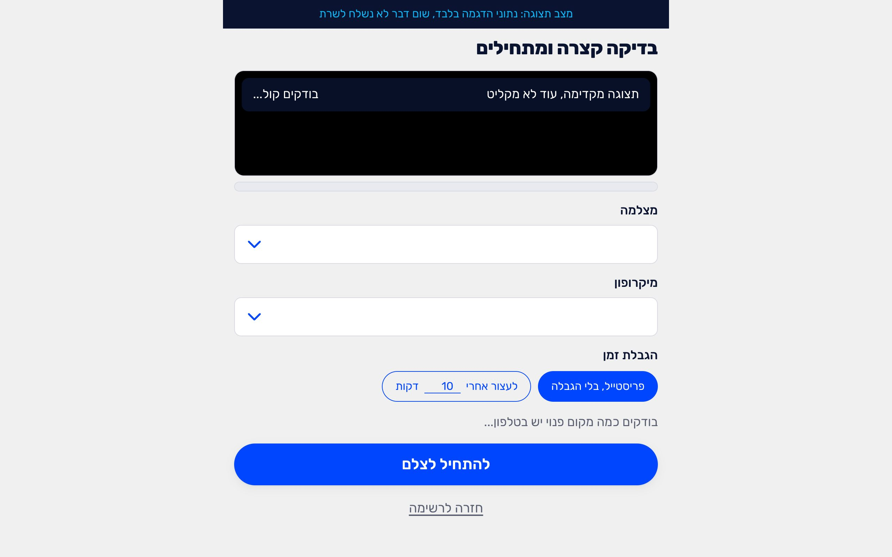
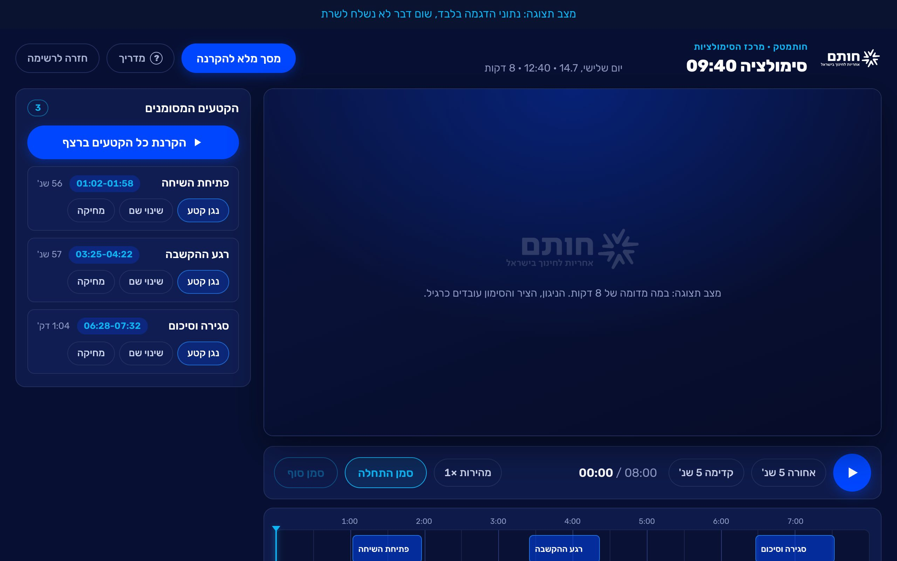
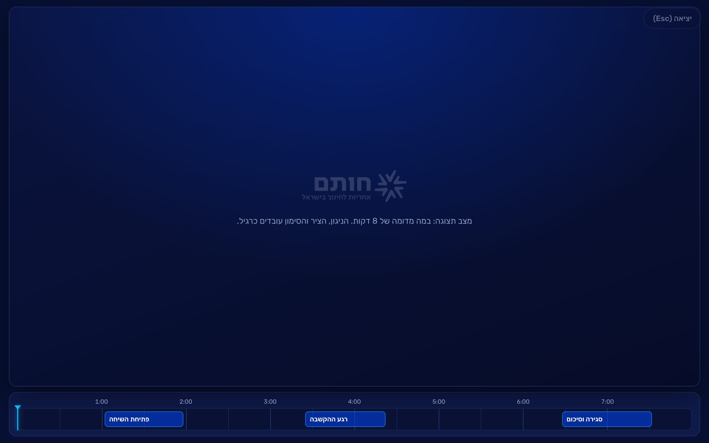

נכנסים
בטלפון או במחשב, גולשים אל hotam.tech/sim ונכנסים — עם חשבון גוגל או עם "כניסה עם מייל ארגוני (TFI)" (מקבלים קישור למייל ולוחצים עליו מאותו מכשיר).
💡 המרכז פתוח לצוות בלבד. מצלמים מהטלפון, מקרינים מהמחשב — עם אותו חשבון בשניהם.

מכינים את הצילום
לוחצים "לצלם סימולציה חדשה". במסך ההכנה:
- בוחרים מצלמה ומיקרופון, ומוודאים שמד הקול זז כשמדברים.
- בוחרים הגבלת זמן: פריסטייל (בלי הגבלה) או עצירה אוטומטית אחרי X דקות.
💡 ליום האירוע: מצב טיסה + WiFi/נתונים דלוקים, ומיקרופון דש אם יש — הסאונד הוא הכל.

מצלמים
לוחצים "להתחיל לצלם". השעון רץ למעלה; מסיימים בכפתור "סיום" (או שהצילום נעצר לבד אם קבעתם הגבלה). ההעלאה לענן מתחילה מיד ואוטומטית.
💡 גם אם הרשת נופלת באמצע — הסרטון שמור בטלפון וההעלאה ממשיכה מאותה נקודה.
עוברים למחשב — האולפן
במחשב המחובר למקרן, נכנסים ל-hotam.tech/sim עם אותו חשבון. הסימולציה שצילמתם מופיעה לבד ברשימה ברגע שההעלאה נגמרת. לוחצים "הקרנה" ונכנסים לאולפן:
- ציר הזמן מתחת לנגן: לחיצה או גרירה קופצת לכל נקודה.
- סימון קטע: מנגנים עד הרגע הרצוי, "סמן התחלה", ממשיכים, "סמן סוף", נותנים שם.
- כל קטע מופיע כבלוק כחול על הציר וברשימת הקטעים — לחיצה מנגנת אותו.
- "הקרנת כל הקטעים ברצף" מנגן את כל מה שסימנתם, אחד אחרי השני.

מקרינים לקבוצה
לוחצים "מסך מלא להקרנה" — נשארים רק הסרטון, ציר הזמן והקטעים. יוצאים ב-Esc.

טיפים ליום האירוע
- לטעון טלפונים ומיקרופונים בלילה שלפני.
- צילום בדיקה של 30 שניות בבוקר — לוודא קול ותמונה.
- כל מוביל/ת רואה רק את הסימולציות שלו/ה — אין בלבול בין חדרים.
- בסוף היום אפשר למחוק סבבים שלא צריך (כפתור "מחיקה" ברשימה).